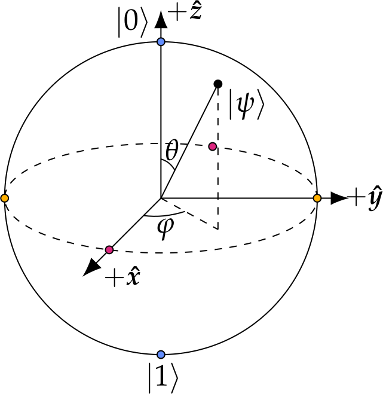
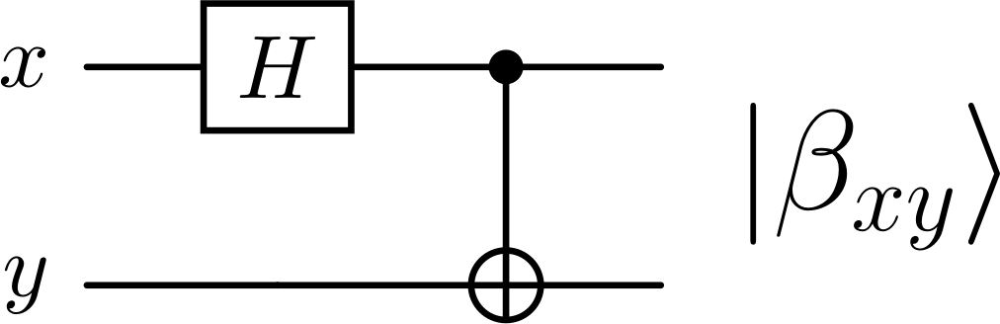
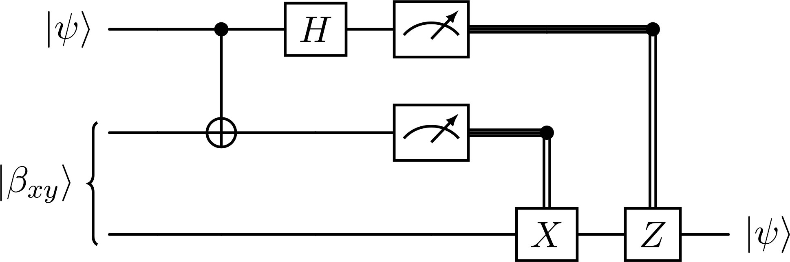
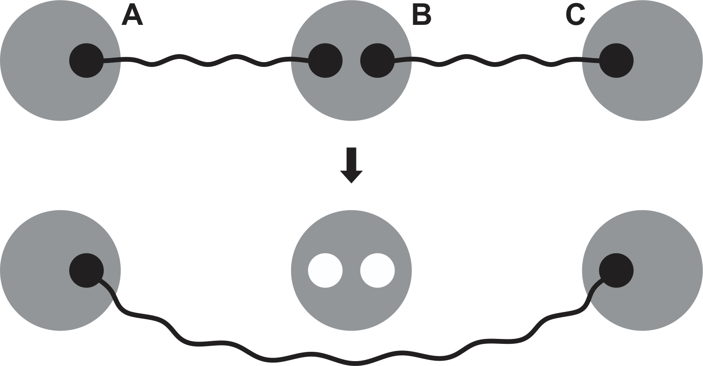
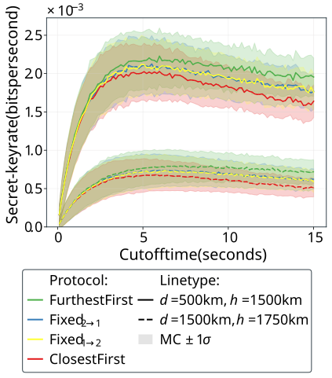
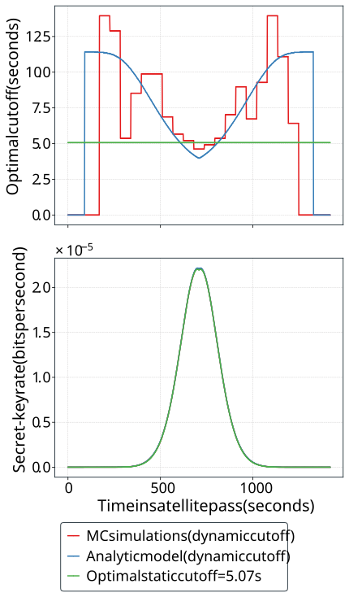

Satellite-Based Quantum Networks: An Overview
Agustin Garcia Flores, Stav Haldar, Filip Rozpędek
University of Massachusetts Amherst
April 30, 2026
- What is a quantum network?
- Teleportation and Entanglement
- Challenges and Opportunities
Present Work: Control Policies in Satellite-Based Quantum Networks
- Physical model
- Scheduling Protocols & Static Cutoffs
- Are dynamic cutoffs really beneficial?

$\left|\psi\right\rangle = \alpha \left|0\right\rangle + \beta \left|1\right\rangle$
$\alpha, \beta \in \mathbb{C}$, $|\alpha|^2 + |\beta|^2 = 1$
Distributed quantum computing $\to$ improved performance
Enhanced sensors $\to$ provide additional capabilities
Quantum communication $\to$ secure information transfer

$x, y \in \mathbb{Z}_2$, $$\left|\beta_{xy}\right\rangle \equiv \frac{1}{\sqrt{2}} \left( \left|0, y\right\rangle + \left(-1\right)^x \left|1, \overline{y}\right\rangle \right)$$
Nielsen, M. A., & Chuang, I. L. (2010). Quantum Computation and Quantum Information: 10th Anniversary Edition. Cambridge: Cambridge University Press.

Nielsen, M. A., & Chuang, I. L. (2010). Quantum Computation and Quantum Information: 10th Anniversary Edition. Cambridge: Cambridge University Press.

Optical fibers: lose 99% of signal over 100 km
doi.org/10.1038/ncomms15043

Satellites: experience less loss over long distances doi.org/10.1038/nature23655
Current stage
UK Quantum Network: over 400 km
China's Beijing-Shanghai network: over 4600 km
doi.org/10.1038/s41586-020-03093-8
$\eta^{(i)}_{\text{tot}}(t) = \eta^{(i)}_{\text{fs}}(t) \cdot \eta^{(i)}_{\text{atm}}(t)$
doi.org/10.1038/s41534-020-00327-5
$$C^{(i)}(t) = \frac1c \left[L_i(t) + L_i\left(t + \frac{L_i(t)}{c}\right)\right]$$
$$L_i^2(t) = r^2 + R_E^2 + 2 r R_E \cos\left[\left(\theta_0 - \phi_{0, i}\right) + \left(\omega_S - \omega_E\right) t\right]$$





University of Massachusetts Amherst
agarciaflore@umass.edu
We take $\tau_{\text{coh}} = 10$ s